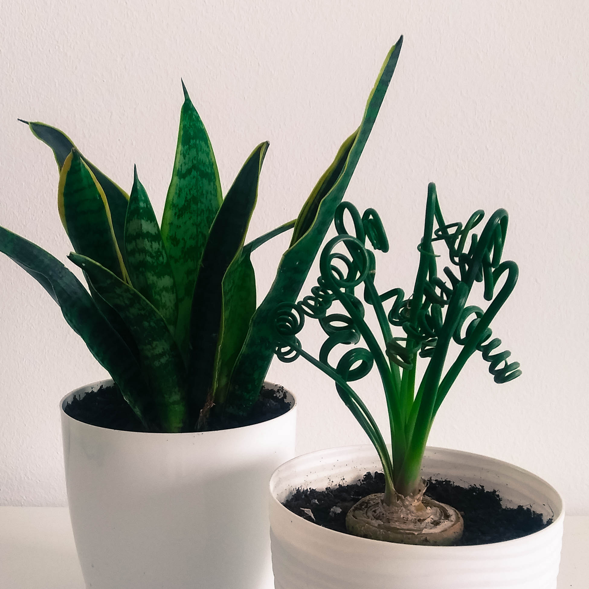

Podłoże do uprawy sukulentów
Idealne podłoże do uprawy sukulentów powinno być suche, ubogie w składniki pokarmowe, lekkie, przepuszczalne, dobrze zdrenowane. Ważne jest, aby umożliwiało ono cyrkulację powietrza wokół korzeni. Ziemia nie powinna zatrzymywać zbyt dużej ilości wody, by nie doprowadzić do gnicia korzeni. Przygotowując podłoże do uprawy sukulentów można wymieszać standardową ziemię kompostową z drobnym żwirem, najlepiej pochodzenia wulkanicznego, keramzytem, gruboziarnistym piaskiem, perlitem w równych proporcjach. Podłoże powinno być porowate, tak aby woda szybko przenikała do głębszych warstw i łatwo mogła zostać odprowadzona. Powinna ona zawierać podstawowe składniki pokarmowe w postaci soli mineralnych, które zapewniają prawidłowy rozwój roślin. Jeżeli chcemy sprawdzić czy podłoże zostało odpowiednio przygotowane, mieszankę należy zwilżyć, a następnie wycisnąć. Prawidłowo skomponowane podłoże po odciśnięciu nie będzie stanowiło zbitej bryły, lecz nadal będzie się kruszyć. Podłoże do uprawy kaktusów i sukulentów przygotowane przez nas i zawierające odpowiednio dobrane komponenty znajdziesz w naszej ofercie –kliknij. Kupując sukulenty należy zwrócić uwagę na podłoże w jakim rosną, gdyż standardowa produkcja sukulentów odbywa się w podłożu torfowym, które nie nadaje się do uprawy docelowej ze względu na nadmierną absorpcję wody. Zaleca się jak najszybsze przesadzenie sukulentów do odpowiedniego podłoża, aby uniknąć gnicia korzeni sukulentów i rozwoju chorób.
